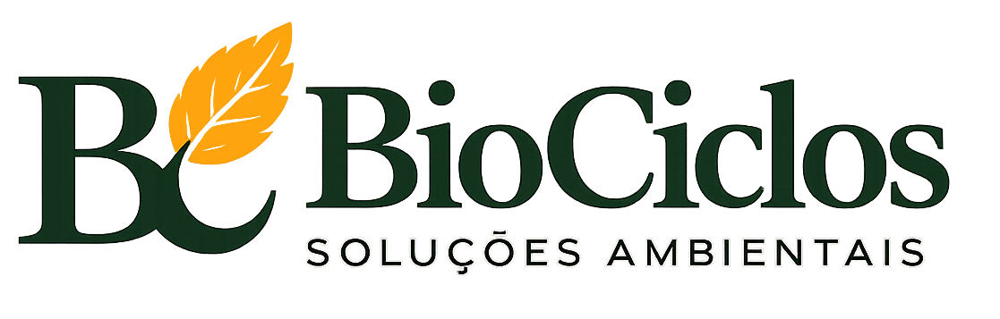
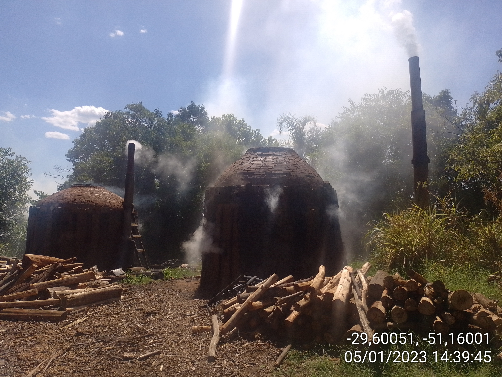
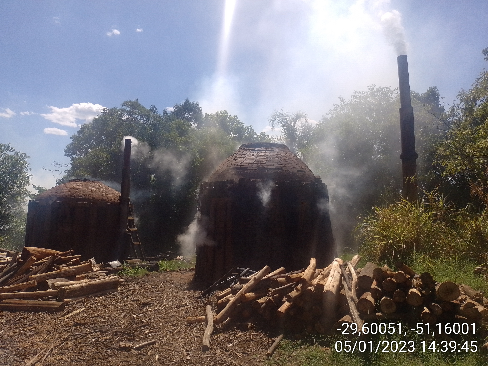

Fale conosco


A BioCiclos é uma consultoria ambiental multidisciplinar, formada por uma rede de técnicos especializados em diversas áreas ambientais. Oferecemos soluções ágeis, personalizadas e economicamente viáveis, alinhando objetivos técnicos e ambientais aos resultados dos nossos clientes.
Com vasta experiência e capacidade comprovada, garantimos benefícios tangíveis e soluções eficazes para a sustentabilidade do seu negócio. Nossa equipe qualificada e infraestrutura adequada permitem atuar em estudos ambientais desde os mais simples até os mais complexos, sempre com excelência.
 

Soluções ambientais eficientes, técnicas e dentro da lei.
A Biociclos atua com foco em sustentabilidade, responsabilidade ambiental e segurança jurídica para empresas.
Email: contato@biociclos.com.br
Telefone: (00) 00000-0000